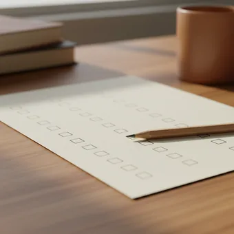

deutschoderwas · Sprechclub · Woche 5 · Strang B · Teil 1 · Dienstag, 13. Oktober
Úmfahren oder umfáhren? wenn die Betonung alles umdreht
„Ich habe den Baum úmgefahren“ und „Ich habe den Baum umfáhren“ sind zwei völlig verschiedene Nachmittage. Dasselbe Wort, dieselben Buchstaben — nur die Betonung liegt anders. Heute lernst du, die zu hören und zu treffen.
Dein Niveau
Gleiches Thema, andere Sätze. Wechsle jederzeit — probier ruhig beide Seiten aus.
Ein Wort, zwei Nachmittage
Stell dir vor, jemand erzählt dir von seiner Autofahrt. Er sagt: „Ich habe die Baustelle umfáhren.“ Alles gut, er ist außen herumgefahren. Sagt er dagegen „Ich habe die Baustelle úmgefahren“, brauchst du eine Versicherung. Der Unterschied liegt allein im Ton.
Kennst du zwei deutsche Wörter, die gleich aussehen und verschieden klingen?
Hörst du beim Sprechen auf die Betonung, oder kommt sie von allein?
Gibt es das in deiner Sprache auch?
Wie merkst du beim Zuhören, dass du ein Wort falsch verstanden hast?
Welche Rolle spielt Betonung in deiner Muttersprache — verändert sie dort auch die Bedeutung?
Wo hast du zuletzt ein Wort betont, und jemand hat gelacht?
🔑 Die Regel für heute, in einem Satz:Ist die Vorsilbe wörtlich gemeint, wird sie betont und abgetrennt. Ist sie übertragen gemeint, bleibt sie unbetont und fest.Úmfahren — das Auto fährt etwas um, wörtlich. Umfáhren — man fährt außen herum, das ist schon ein Bild.
Wo wir stehen: die dritte Sorte Vorsilbe
In Woche 4 waren alle Vorsilben immer trennbar: an-, ab-, auf-, aus-, ein-. In Woche 6 kommen die, die nie trennbar sind: ver-, be-, ent-, zer-. Dazwischen liegt genau eine Gruppe — die, die beides kann. Genau die machen wir heute.
Welche trennbaren Verben aus Woche 4 fallen dir noch ein?
Wo steht die Vorsilbe im Hauptsatz?
Wie sieht das Perfekt bei anrufen aus?
Warum ist bei verstehen kein ge- im Perfekt?
Kannst du an einem Verb hören, ob es trennbar ist — ohne es zu kennen?
Welche Vorsilbe hat dir bisher die meisten Probleme gemacht?
💡 Sechs Vorsilben, mehr sind es nicht:um-, über-, unter-, durch-, wider-, wieder-. Nur diese sechs können beides. Alle anderen sind entweder immer trennbar oder nie. Das heißt: Du musst dir nicht Tausende Verben merken, sondern sechs Silben — und bei denen einmal kurz nachdenken.
Zwölf Verben, die sich verstellen können
Sagt jedes Verb zweimal laut — einmal mit der Betonung vorne, einmal hinten. Ihr hört den Unterschied sofort, und genau darum geht es heute.
umfahren
„Wir umfáhren die Baustelle über die Landstraße.“
💡 umfáhren (fest, Ton hinten) = außen herumfahren. úmfahren (trennbar, Ton vorne) = anfahren und umwerfen: Er hat das Schild úmgefahren.
übersetzen
„Die Fähre setzt jede Stunde über.“
💡 übersétzen (fest) = in eine andere Sprache. ǘbersetzen (trennbar) = mit dem Boot ans andere Ufer: Wir setzen mit der Fähre über. Das zweite hört man selten — aber es ist das ältere.
durchschauen
„Ich habe ihn sofort durchscháut.“
💡 durchscháuen (fest) = jemandes Absicht erkennen. dúrchschauen (trennbar) = wörtlich hindurchsehen: Schau mal durch, ob da was steht.
umschreiben
„Kannst du das Wort umschréiben, wenn es dir nicht einfällt?“
💡 umschréiben (fest) = mit anderen Worten erklären — dein wichtigstes Werkzeug beim Sprechen. úmschreiben (trennbar) = noch einmal neu schreiben.
wiederholen
„Können Sie das bitte wiederhólen?“
💡 wiederhólen (fest) = noch einmal machen oder sagen. wíederholen (trennbar) = etwas zurückholen — sehr selten, aber es gibt es: Ich hole mir das Buch wieder.
unterhalten
„Wir haben uns lange unterhálten.“
💡 sich unterhálten (fest) = reden oder sich amüsieren. únterhalten (trennbar) = wörtlich etwas darunter halten: Halt mal die Schüssel unter.
übersehen
„Ich habe die Mail leider übersehen.“
💡 Immer fest, nie trennbar — und deshalb ohne ge-: übersehen, nicht übergesehen. Das ist eines der Verben, bei denen man den Fehler sofort hört.
umsteigen
„In Köln müssen wir úmsteigen.“
💡 Immer trennbar, immer wörtlich: Du steigst aus einem Zug aus und in einen anderen ein. Der Ton liegt auf úm — bei einer Ansage im Bahnhof hörst du genau das.

durchfallen
„Er ist zweimal dúrchgefallen.“
💡 Immer trennbar, und das Bild dahinter ist wörtlich: Man fällt durch das Sieb. Deshalb mit ge-: dúrchgefallen. Das Gegenteil heißt bestehen.
unterschreiben
„Bitte unterschréiben Sie hier unten.“
💡 Sieht wörtlich aus — unter etwas schreiben — ist aber trotzdem fest: unterschrieben, nicht untergeschrieben. Eine der Ausnahmen, die man einfach mitnimmt.
überfahren
„Er hat eine rote Ampel überfáhren.“
💡 Fest, also kein ge-: überfahren. Genau wie umfáhren gehört es zu den Verben, bei denen ein Betonungsfehler die Polizei interessieren würde.
durchkommen
„Wir sind gerade noch dúrchgekommen.“
💡 Immer trennbar. Zwei Bedeutungen, beide nützlich: wörtlich durch eine Sperre kommen — und übertragen eine schwere Zeit überstehen: Wir kommen schon durch.
💡 Spiel „Zwei Nachmittage“: Einer nennt eines der Doppelverben — umfahren, übersetzen, durchschauen, umschreiben, unterhalten. Der andere baut beide Sätze, mit richtiger Betonung. Wer die Betonung vertauscht, muss die peinlichere Bedeutung erklären.
Immer, nie oder beides?
Es gibt genau drei Gruppen. Wenn du weißt, in welcher Gruppe eine Vorsilbe liegt, weißt du sofort alles über den Satzbau und das Perfekt.
Ich fahre um. → umgefahren · Ich umfahre. → umfahren
✅ Wörtlich gemeint
Er hat den Zaun úmgefahren.
Warum getrenntDer Zaun steht jetzt tatsächlich um, also am Boden. Die Vorsilbe meint eine echte Bewegung — deshalb betont, getrennt und mit ge-: úmgefahren.
❌ Übertragen gemeint
Er hat den Stau umfáhren.
Warum festHier liegt nichts um. Um beschreibt nur den Bogen, den er gefahren ist — das ist schon ein Bild. Also unbetonte Vorsilbe, fest und ohne ge-: umfáhren.
✅ Wörtlich gemeint
Die Fähre setzt gleich über.
Warum getrenntEtwas bewegt sich wirklich über das Wasser. Echte Bewegung heißt: Ton auf ǘber, Vorsilbe ans Satzende, Perfekt mit ge- — übergesetzt.
❌ Übertragen gemeint
Sie hat den Text übersétzt.
Warum festNichts fährt über einen Fluss. Der Text wechselt nur die Sprache — das über ist ein Bild. Also fest und ohne ge-: übersetzt.
✅ So sagt man es
Ich habe die Zahl übersehen.
Warum das stimmtübersehen ist immer fest — es ist immer übertragen gemeint. Feste Verben bekommen nie ein ge- im Partizip.
❌ So nicht
Ich habe die Zahl übergesehen.
Das ProblemDas ge- gehört nur zu trennbaren Verben. Bei festen klingt es sofort falsch — und es ist der häufigste Fehler mit diesen sechs Vorsilben.
Du brauchst keine Liste. Stell dir das Bild vor:
Bewegt sich wirklich etwas so, wie die Vorsilbe sagt? Dann trennbar, Ton auf der Vorsilbe. úmfallen, úmsteigen, dúrchgehen.
Ist es nur ein Bild? Dann fest, Ton auf dem Verb. übersétzen, durchscháuen, unterhálten.
Der Hörtest: Sprich das Wort laut. Wo dein Ton hinfällt, gehört er meistens auch hin — dein Ohr weiß mehr, als du denkst.
Der ge-Test rückwärts: Klingt übergesetzt komisch? Dann ist das Verb fest, und du sagst übersetzt.
Und ein Trost: Bei den allermeisten dieser Verben gibt es im Alltag nur eine gebräuchliche Bedeutung. Übersetzen heißt fast immer „in eine andere Sprache“, wiederholen fast immer „noch einmal“. Die zweite Variante brauchst du zum Verstehen, nicht zum Sprechen.
🎯 Zu zweit, eine Minute: Einer sagt ein Verb mit einer Betonung, der andere baut sofort den passenden Satz. Wenn der Satz nicht zur Betonung passt, hat einer von beiden nicht aufgepasst — findet gemeinsam heraus, wer.
Vier Bausteine, und der Satz sitzt
Betonung wählen, Vorsilbe platzieren, Perfekt bilden, mit zu verbinden. Vier Handgriffe, die bei allen sechs Vorsilben gleich funktionieren.
2 · 📍 Die Vorsilbe platzieren trennbar → ans Endefest → bleibt am VerbIch steige in Köln um.Ich umfahre die Stadt.
So klingt esIn Köln steige ich um.
3 · ⏮️ Das Perfekt bilden trennbar → ge- in die Mittefest → gar kein ge-úmgestiegenübersétzt
So klingt esIch bin in Köln úmgestiegen.
4 · 🔗 Mit zu verbinden trennbar → zu in die Mittefest → zu davorúmzusteigenzu übersétzen
So klingt esIch habe vergessen, in Köln úmzusteigen.
1 · 🎭 Den Unterschied ausspielen Ich habe ihn durchscháut — ich weiß, was er willIch habe dúrchgeschaut — ich habe hindurchgesehenSie hat den Vertrag umschríeben — anders formuliertSie hat den Vertrag úmgeschrieben — noch mal neu getippt
So klingt esIch habe ihn ziemlich schnell durchscháut — der wollte nur etwas verkaufen.
2 · 🧭 Sich absichern Also im Sinne von …Ich meine jetzt nicht …Um genau zu sein: …Anders gesagt: …
So klingt esIch habe die Baustelle umfáhren — im Sinne von: außen herum, nicht umgeworfen.
3 · 💬 Umschreiben statt steckenbleiben So ein Ding, mit dem man …Das ist, wenn jemand …Wie soll ich sagen — …Das Gegenteil von …
So klingt esWie soll ich sagen — das ist, wenn man außen herumfährt statt mittendurch.
4 · ❓ Nachfragen, wenn du unsicher bist Wie meinst du das jetzt?Umgefahren oder umfahren?Also wirklich oder im übertragenen Sinn?Kannst du das anders sagen?
So klingt esMoment — úmgefahren oder umfáhren? Das ist ein kleiner Unterschied.
Verb das Verb die Betonung Höflichkeit
📣 Sofort anwenden: Nimm umfahren und bau alle vier Formen laut: Hauptsatz getrennt, Hauptsatz fest, Perfekt getrennt, Perfekt fest. Wenn diese vier sitzen, sitzen alle sechs Vorsilben.
Vier Situationen — zwei Runden
Runde 1: Lest den Dialog zu zweit laut und achtet dabei genau auf die Betonung. Runde 2: Klappt die Zeilen zu und spielt ihn frei.
Dialog 1 · „Das Missverständnis am Telefon“
Du rufst an, weil du später kommst. Der andere versteht erst etwas ganz anderes.
A
Wo bleibst du denn? Wir warten seit einer halben Stunde.
B
Tut mir leid, ich musste die Baustelle umfáhren — mit Betonung hinten, keine Sorge.
🗣️ umfáhren, Ton auf fahr: außen herum. Der Zusatz macht klar, dass nichts kaputt ist.tippen = Hilfe zeigen
A
Puh. Ich hatte kurz ein anderes Bild im Kopf.
B
Genau deshalb sage ich es dazu. Úmgefahren wäre deutlich teurer geworden.
🗣️ úmgefahren, Ton vorne und mit ge-: die trennbare Variante. Der Witz lebt vom Unterschied.tippen = Hilfe zeigen
A
Wie lange brauchst du noch?
B
Zwanzig Minuten. In Neuss muss ich noch úmsteigen, ich bin mit der Bahn.
🗣️ úmsteigen ist immer trennbar — echte Bewegung, Ton vorne, Vorsilbe ans Ende.tippen = Hilfe zeigen
A
Dann fangen wir schon mal an.
B
Macht das. Und wiederhólt mir nachher kurz, was ich verpasst habe.
🗣️ wiederhólen, Ton hinten: noch einmal sagen. Fest, also ohne ge- im Perfekt.tippen = Hilfe zeigen
Dialog 2 · „Im Kurs: ein Wort fehlt“
Du sprichst und dir fällt ein Wort nicht ein. Statt aufzugeben, umschreibst du es.
A
Und wie ist das bei dir zu Hause geregelt?
B
Also, es gibt da so ein … Moment, ich umschréibe das kurz.
🗣️ umschréiben, Ton hinten: mit anderen Worten sagen. Genau das Werkzeug für diesen Moment.tippen = Hilfe zeigen
A
Gern, nimm dir Zeit.
B
Es ist ein Papier, das man ausfüllt und únterschreibt — nein, unterschréibt, fest.
🗣️ Selbstkorrektur mitten im Satz: unterschréiben ist fest, obwohl es wörtlich aussieht. Das darf man laut überlegen.tippen = Hilfe zeigen
A
Ein Formular?
B
Genau, ein Formular. Danke — das Wort hatte ich komplett übersehen.
🗣️ übersehen ist fest: kein ge-. übergesehen gibt es nicht.tippen = Hilfe zeigen
A
Umschreiben ist übrigens besser als schweigen.
B
Stimmt. Und meistens sagt mir dann jemand das Wort.
🗣️ Der wichtigste Satz der Stunde — Umschreiben löst das Problem fast immer.tippen = Hilfe zeigen
Dialog 3 · „Der Verkäufer an der Tür“
Jemand will dir an der Haustür etwas verkaufen. Du merkst schnell, worauf es hinausläuft.
A
Guten Tag, ich mache nur eine kurze Umfrage, ganz unverbindlich.
B
Ich glaube, ich habe Sie durchscháut — Sie wollen mir einen Vertrag verkaufen.
🗣️ durchscháuen, Ton hinten: jemandes Absicht erkennen. Fest, also im Perfekt ohne ge-.tippen = Hilfe zeigen
A
Na ja, ich würde Ihnen nur gern ein Angebot zeigen.
B
Danke, kein Interesse. Ich unterschréibe grundsätzlich nichts an der Tür.
🗣️ unterschréiben fest, und der Satz ist eine klare Grenze — höflich, aber ohne Verhandlung.tippen = Hilfe zeigen
A
Ich könnte Ihnen die Unterlagen dalassen.
B
Machen Sie das, ich schaue sie in Ruhe dúrch.
🗣️ dúrchschauen, Ton vorne, trennbar: wörtlich durchsehen. Anderes Wort, anderer Ton, andere Bedeutung.tippen = Hilfe zeigen
A
Sehr gern. Einen schönen Tag noch.
B
Danke, ebenfalls.
🗣️ Kurz und freundlich schließen — das Gespräch ist ohne Streit beendet.tippen = Hilfe zeigen
Dialog 4 · „Die Durchsage im Bahnhof“
Ihr steht am Gleis, die Durchsage war undeutlich. Ihr klärt zu zweit, was gesagt wurde.
A
Hast du das verstanden? Irgendwas mit umsteigen.
B
Ich habe gehört: In Hamm úmsteigen, der Anschluss wird erreicht.
🗣️ úmsteigen mit Ton vorne — bei Durchsagen ist genau diese Silbe die lauteste.tippen = Hilfe zeigen
A
Und was war das danach mit dem Gleis?
B
Sie hat es zweimal wiederhólt: Gleis sieben statt drei.
🗣️ wiederhólt, fest, ohne ge-. Nicht wiedergeholt — das wäre etwas ganz anderes.tippen = Hilfe zeigen
A
Gut, dass du zugehört hast. Ich hatte das komplett übersehen.
B
Überhört, meinst du. Übersehen geht nur mit den Augen.
🗣️ Feiner Unterschied, den Muttersprachler automatisch machen: übersehen mit den Augen, überhören mit den Ohren.tippen = Hilfe zeigen
A
Stimmt. Dann los, wir kommen sonst nicht durch.
B
Wir schaffen das schon. Komm.
🗣️ dúrchkommen hier wörtlich — durch die Menge. Ton vorne, trennbar.tippen = Hilfe zeigen
🎭 Und jetzt ihr: Spielt Dialog 1 nach, aber vertauscht absichtlich einmal die Betonung. Der andere muss sofort einhaken und fragen: „Moment — wirklich úmgefahren?“ So hört ihr den Unterschied besser als in jeder Erklärung.
🧩 Betonung entscheidet: trennbar oder fest
Eine einzige Frage steuert alles — Satzbau, Perfekt und die Form mit zu. Wenn du sie beantwortest, ergibt sich der Rest von selbst.
Bei den sechs Vorsilben um-, über-, unter-, durch-, wider-, wieder- gibt es keine Liste zum Auswendiglernen, sondern eine Frage: Ist die Vorsilbe wörtlich gemeint? Wenn ja, wird sie betont, abgetrennt und im Perfekt mit ge- gebaut. Wenn sie nur ein Bild ist, bleibt sie unbetont am Verb kleben — und dann gibt es kein ge-. Diese eine Entscheidung zieht drei Dinge hinter sich her, und deshalb lohnt es sich, sie einmal richtig zu verstehen.
🎵Betonung vorne = trennbarIch steige in Köln úm.
▾
🎶Betonung hinten = festIch umfáhre die Stadt.
▾
⏮️trennbar = ge- in die MitteIch bin úmgestiegen.
▾
🚫fest = gar kein ge-Ich habe die Stadt umfáhren.
Wer?Ich
Verb an zweiter Stellesteige
Wo?in Köln
Vorsilbe ans Endeum.
Dasselbe Verb in vier Formen
Nimm umsteigen (trennbar) und umfahren (fest) und lies die Zeilen im Wechsel. Der Unterschied wird dann sehr deutlich.
✂️
Trennbar: alles wandert
Vorsilbe ans Ende, ge- und zu in die Mitte
úmsteigen · steige um · úmgestiegen · úmzusteigen
🔒
Fest: nichts bewegt sich
das Wort bleibt, wie es ist — nur kein ge-
umfáhren · umfahre · umfáhren · zu umfáhren
👂
Der Ton verrät es
wo du betonst, so baust du
ÚMsteigen ✂ · umFÁHren 🔒
Hauptsatz trennbar → Ich steige in Köln um.Hauptsatz fest → Ich umfahre den Stau.Perfekt trennbar → Ich bin úmgestiegen.Perfekt fest → Ich habe den Stau umfáhren.Mit zu, trennbar → ohne úmzusteigenMit zu, fest → um den Stau zu umfáhren
Die sechs Silben und ihre Neigung
Sie können zwar beides — aber jede hat eine Lieblingsseite. Das hilft, wenn du raten musst.
🎲
Im Zweifel bei über-/unter-
nimm fest, das trifft öfter zu
unterhálten, übersétzen, unterschréiben
🚶
Im Zweifel bei durch-
nimm trennbar, das trifft öfter zu
dúrchlesen, dúrchgehen, dúrchfallen
🧠
Und bei um-
frag nach dem Bild, nicht nach der Statistik
Fällt etwas wirklich um? Dann trennbar.
durch- → meistens trennbar (dúrchlesen, dúrchfallen, dúrchkommen)um- → beides, etwa gleich häufig (úmsteigen · umármen)über- → meistens fest (übersétzen, überlégen, überráschen)unter- → meistens fest (unterhálten, unterschréiben, unterstützen)wieder- → fast immer fest (wiederhólen), Ausnahme wíedersehenwider- → immer fest (widerspréchen, widerlégen)
🧱 Bau die Sätze selbst
Tippe die Teile in der richtigen Reihenfolge an. Achte auf die Betonung im Kopf — sie sagt dir, wohin die Vorsilbe gehört.
📖 Und jetzt im Zusammenhang
Eine Fahrt, bei der beide Bedeutungen vorkommen. Wähle für jede Lücke das passende Wort.
Das ist normal und geht weg. Diese vier Handgriffe helfen sofort:
Klopf mit. Sprich das Wort und klopf bei der lauten Silbe auf den Tisch. Der Körper hört Betonung besser als das Ohr.
Übertreibe. Sag ÚM-fahren und um-FÁH-ren viel zu deutlich. Danach findest du die Mitte von allein.
Nutze das Perfekt als Beweis. Kannst du úmgefahren sagen? Dann ist es trennbar. Klingt nur umfáhren möglich, ist es fest.
Hör auf Durchsagen. Im Bahnhof wird jede trennbare Vorsilbe kräftig betont — das ist kostenloses Hörtraining.
Ein Satz zum Auswendiglernen, in dem beide vorkommen: „Ich bin in Köln úmgestiegen und habe die Baustelle umfáhren.“ Wenn du den flüssig sprichst, hast du das Prinzip.
🎭 Drei Situationen zu zweit
Einer erzählt, einer hakt nach. Danach tauschen — und beim zweiten Mal ohne Notizen.
1 · Die Fahrt, die schiefging
A erzählt von einer Autofahrt, bei der einiges passiert ist. B hört genau hin und fragt bei jedem Doppelverb nach, welche Bedeutung gemeint war.
Ich musste die Baustelle umfahrenIn Neuss bin ich umgestiegenIch habe die Ausfahrt übersehenWie meinst du das jetzt?
Beinahe hätte ich ein Schild umgefahrenIch habe die rote Ampel überfahrenErst hinterher habe ich das durchschautAlso wörtlich oder im übertragenen Sinn?
✅ Eine gute Runde enthältA hat mindestens vier der sechs Vorsilben benutzt und die Betonung jedes Mal gehalten. B hat mindestens zweimal nachgefragt, welche Bedeutung gemeint war.
2 · Das Wort, das nicht kommt
A bekommt vom Partner ein schwieriges Wort auf einem Zettel — Formular, Versicherung, Anschluss, Vertrag, Zeugnis — und darf es nicht sagen. A muss es umschreiben, bis B es errät.
Das ist so ein Papier, das man …Man braucht es, wenn …Das Gegenteil davon ist …Wie soll ich sagen …
Es geht in die Richtung von …Man verwendet es vor allem, wenn …Stell dir vor, du …Es hat etwas zu tun mit …
✅ Eine gute Runde enthältA hat kein einziges Mal aufgegeben und mindestens drei verschiedene Umschreibungsanfänge benutzt. B hat jedes Wort erraten — oder A hat es so gut umschrieben, dass es fast egal war.
3 · Zwei Sätze, ein Wort
A zieht ein Doppelverb und sagt einen Satz damit — ohne zu verraten, welche Bedeutung. B muss aus der Betonung erkennen, was gemeint ist, und den Satz mit der anderen Bedeutung antworten.
umfahrenübersetzendurchschauenumschreiben
unterhaltenwiederholenumstellendurchgehen
✅ Eine gute Runde enthältBei jedem Verb standen am Ende beide Sätze im Raum, mit hörbar verschiedener Betonung. Wer falsch geraten hat, konnte hinterher sagen, woran es lag.
🎴 Sprechkarten
Zieh eine Karte und sprich mindestens vier Sätze am Stück.
Deine Aufgabe
Tippe auf den Knopf.
⏱️ Die 90-Sekunden-Challenge
Ein Verb, anderthalb Minuten, freies Sprechen. Die Aufgabe ist nicht, viel zu sagen — sondern die Betonung zu halten, auch wenn es schnell wird.
Dein Wort
umfahren
1:30
Bau dir eine kleine Geschichte um das Verb, dann läuft die Zeit von allein:
Wann ist das passiert? Letzte Woche war ich …
Was war das Problem? Auf einmal …
Was hast du gemacht? Also habe ich …
Und die andere Bedeutung? Nicht zu verwechseln mit … — das wäre nämlich …
Wenn du hängen bleibst, umschreib einfach: „Das ist, wenn man außen herum fährt statt mittendurch.“ Umschreiben gehört heute ausdrücklich dazu — es ist eines der Verben dieser Stunde.
⏱️ Spielregel: In jeder Runde müssen beide Bedeutungen des Verbs vorkommen, jede mit richtiger Betonung. Der Partner hört mit und klopft einmal auf den Tisch, wenn der Ton auf der falschen Silbe lag.
✅ Sitzt es schon?
8 Fragen. Tippe auf deine Antwort — die Erklärung kommt sofort.
✍️ Lückentext
Wähle in jeder Lücke das passende Wort.
📣 Danach laut: Jeder nennt reihum eines der sechs Vorsilbenverben. Der Nachbar sagt sofort beide Sätze — erst getrennt, dann fest. Wer die Betonung vertauscht, gibt weiter.
📮 Deine Hausaufgabe bis Donnerstag
Vier kleine Aufgaben, zusammen etwa 25 Minuten. Am Donnerstag geht es um die Verben, die nur noch im übertragenen Sinn existieren — da brauchst du die Regel von heute wieder.
💡 Warum das hilft: Diese sechs Vorsilben sind die letzte echte Hürde bei den zusammengesetzten Verben. Danach kannst du jedes deutsche Verb einordnen, das dir begegnet — ohne es nachzuschlagen. Und du hörst zum ersten Mal, dass Betonung im Deutschen nicht Geschmack ist, sondern Grammatik.
0 von 0 Aufgaben geschafft.
So sehen die Partizipien aus — achte auf das ge-:
úmsteigen → úmgestiegen (trennbar, ge- in der Mitte)
übersetzen → übersétzt (fest, kein ge-)
dúrchfallen → dúrchgefallen (trennbar, ge- in der Mitte)
unterschreiben → unterschríeben (fest, kein ge-)
übersehen → übersehen (fest, sieht aus wie der Infinitiv)
Ein einziger Test: Sprich das Partizip laut. Liegt der Ton auf der Vorsilbe, gehört ein ge- hinein. Liegt er auf dem Verb, darf keins hinein.
So sieht ein sauberes Paar aus — gleiche Buchstaben, verschiedene Welt:
úmfahren: Beim Rückwärtsfahren habe ich den Blumentopf úmgefahren.
umfáhren: Wegen des Staus haben wir die ganze Innenstadt umfáhren.
dúrchschauen: Ich habe die Unterlagen kurz dúrchgeschaut.
durchscháuen: Sein Trick war leicht zu durchscháuen.
úmschreiben: Der Text war so schlecht, dass ich ihn komplett úmgeschrieben habe.
Achte beim Schreiben besonders auf das Perfekt: Dort sieht man den Unterschied schwarz auf weiß, während man ihn im Präsens nur hört.
📬 Abgabe: Schick deine Sprachnachricht bis Mittwochabend. Ich höre sie an und markiere jede Stelle, an der die Betonung gekippt ist — genau das ist bei dieser Stunde der Punkt, den man allein nicht hört.
🔜 Am Donnerstag, Teil 2:übersetzen, durchschauen, wiederholen. Wir bleiben bei denselben sechs Vorsilben, gehen aber auf die Seite, die man wirklich täglich braucht — die übertragene. Dazu die feste Regel fürs Perfekt und die Frage, warum wiederholen zwei völlig verschiedene Wörter sind.